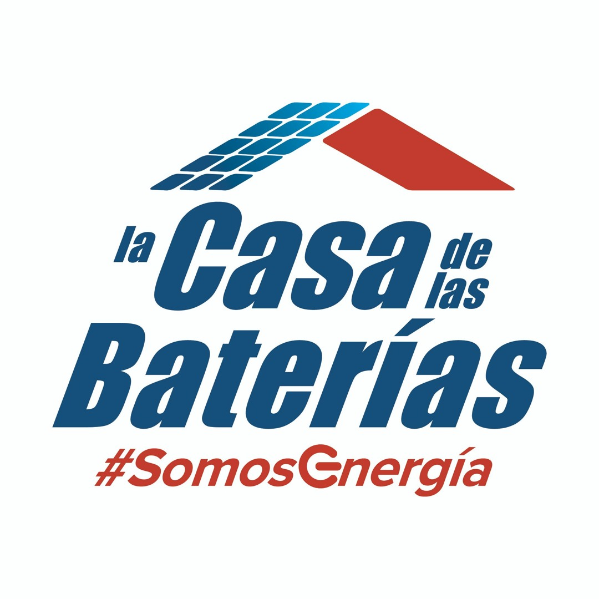

Sesión 1 de 2 · 16 laboratorios con NotebookLM, Deep Research, Canvas, Gems, Docs, Vids y Drive.
Hoy CasaBat debe ordenar una bandeja, comprender un expediente, investigar una oportunidad, convertirla en un prototipo y dejar una capacidad reutilizable. No son cinco prompts parecidos: son cinco formas distintas de trabajar con IA.
Identificar el modo evita pedir una redacción cuando en realidad necesitas fuentes, investigación, cálculo o una aprobación.
Crear o transformar un artefacto.
Ejemplo: prototipo en Canvas. Riesgo: forma sin evidencia.
Responder desde fuentes seleccionadas.
Ejemplo: expediente en NotebookLM. Riesgo: fuente incompleta.
Obtener una cifra reproducible.
Ejemplo: prueba de una regla. Riesgo: datos defectuosos.
Cambiar algo fuera de la IA.
Ejemplo: compartir o habilitar. Requiere aprobación.
Gemini, NotebookLM, Deep Research, Canvas y Gems pueden depender de licencia, región o habilitación del administrador. Trabaja en parejas si una cuenta no tiene acceso.
Los archivos del curso son ficticios. En investigación abierta no cargues nombres, ventas ni información real de clientes.
La IA puede investigar, sintetizar y prototipar. El dueño humano valida fuentes, aprueba el artefacto y decide su uso.
Cada equipo reutiliza los mismos materiales ficticios, pero cambia de entorno, dinámica y entregable.
05_correos_pendientes.xlsxUna única dinámica de bandeja · laboratorio 1expediente-PR-ADM-014/Seis fuentes para NotebookLM · laboratorio 200_contexto_marca_casabat.docxContexto para investigación y Canvas07_notas_comite_operaciones.docxPreguntas internas para contrastar con fuentes públicas03_politica_garantia.docxFuente de la Gem de orientación06_correos_de_referencia.docxPatrones observables de voz CasaBat01_especificacion_de_tarea.docxEstructura de instrucciones para la Gem02_pruebas_de_aceptacion.docxCasos normales, límite y adversarialesEn la interfaz los nombres pueden variar por cuenta. La decisión estable es fuente cerrada, web abierta, artefacto editable o comportamiento reusable.
Conversa con un conjunto controlado de fuentes y devuelve citas.
Úsalo para expedientes, políticas y síntesis verificable.
Propone un plan y recorre múltiples fuentes públicas.
Úsalo cuando la respuesta debe buscarse fuera de CasaBat.
Crea y edita documentos, presentaciones o prototipos.
Úsalo cuando el entregable necesita iteración visual.
Conserva instrucciones y archivos para una tarea repetitiva.
Úsala cuando otra persona debe repetir el trabajo.
Revisa los 20 registros del Excel y prioriza solo ocho.
Devuelve ID, señal de prioridad, modo de trabajo, fuente necesaria, dueño propuesto y riesgo de esperar. No redactes respuestas.
No conviertas tono urgente en prioridad: exige plazo, dinero, cliente, bloqueo o aprobación.
Usa únicamente las fuentes seleccionadas del expediente PR-ADM-014.
Devuelve: regla vigente, documento que la sostiene, contradicción, impacto y pregunta para el dueño. Incluye una cita verificable por hallazgo.
No resuelvas contradicciones por mayoría de documentos ni uses conocimiento externo.
1 · SLIDE DECK · Decisión requerida, regla vigente, contradicciones, impacto y preguntas al dueño.
2 · INFOGRAFÍA · Resume documentos, relaciones y alertas; compara contra el deck y señala una omisión.
3 · CANVAS · Crea una presentación editable de cinco slides, incorpora la corrección y cierra con la decisión solicitada.
APLICACIÓN INDIVIDUAL · Analiza esta tarea de mi puesto: [descríbela sin datos sensibles].
Devuelve modo, herramienta, entrada, entregable, riesgo, aprobación humana y una prueba que pueda ejecutar hoy.
Cuestiona mi elección si una herramienta más simple resuelve mejor el trabajo.
Investiga la viabilidad de un piloto CasaBat de diagnóstico preventivo de baterías para flotas comerciales en Panamá.
Cubre comprador, problema, alternativas, señales locales, barreras y fuentes primarias. Separa evidencia, inferencia y vacíos.
Recomienda realizar o no diez entrevistas; no estimes mercado sin base verificable.
Audita tres afirmaciones del informe. Para cada una devuelve texto exacto, fuente, evidencia localizada, fecha, alcance y veredicto: CONFIRMADA, PARCIAL o NO RESPALDADA.
Si la fuente no prueba la afirmación, reduce el lenguaje o elimina la conclusión. No uses el propio resumen como evidencia.
En Canvas crea un prototipo ejecutivo de una página para el piloto de salud preventiva de baterías de flota.
Incluye usuario, situación, promesa, evidencia, incertidumbres, entrevistas, métrica y decisión. No inventes precios.
Tras el feedback, modifica solo la sección seleccionada y exporta a Docs o comparte el Canvas.
APLICACIÓN INDIVIDUAL · Diseña una investigación para esta decisión de mi área: [decisión].
Propón preguntas, fuentes primarias, criterios de descarte, incertidumbres y estructura del artefacto final en Canvas.
No ejecutes aún recomendaciones irreversibles ni completes vacíos con estimaciones sin fuente.
Compara tres candidatas a Gem: orientar garantías, revisar integridad de expediente y preparar brief de apertura.
Usa una matriz 1–5 para frecuencia, fuente estable, variación, riesgo, prueba objetiva y reversibilidad. Recomienda una sola para siete días.
La Gem solo prepara orientación o borradores; no decide cobertura, aprueba expedientes ni publica.
Configura Orientador de Garantías CasaBat v0.1.
Debe pedir producto, compra, comprobante, síntoma y país; citar política; separar orientación de decisión; marcar [VERIFICAR] y detenerse si falta un dato crítico.
Nunca concede cobertura, inventa excepciones, promete reemplazo ni solicita datos personales innecesarios.
Prueba la Gem con tres casos: dentro de plazo, fuera de plazo e incompleto.
Para cada uno registra pregunta inicial, fuente citada, orientación, dato faltante, detención y PASS o FAIL.
No corrijas la respuesta manualmente: el objetivo es evaluar la configuración v0.1.
APLICACIÓN INDIVIDUAL · Diseña una Gem para esta tarea repetitiva: [tarea].
Incluye usuario, objetivo, flujo, fuentes permitidas, salida, fuera de alcance, detención y tres pruebas de aceptación.
La Gem prepara trabajo para revisión; no aprueba, envía ni modifica sistemas.
PTCF · Actúa como Coordinador de Operaciones. Convierte las notas en un informe para Gerencia.
En Google Docs organiza: resumen, hallazgos por sucursal y plan con prioridad, evidencia, acción, dueño, fecha y dato faltante.
No presentes comentarios verbales, causas ni responsables propuestos como hechos confirmados.
Crea en Google Vids un microvideo para el equipo de sucursales basado en @[informe del laboratorio 13].
Explica una desviación prioritaria, la conducta esperada, el responsable de verificar y la evidencia de cumplimiento.
Duración objetivo: una cápsula breve. No agregues políticas, cifras ni responsables ausentes del informe.
Con Ask Gemini audita los cuatro reportes de la carpeta.
Devuelve por sucursal: checklist, calibración, contradicción, evidencia faltante, compromiso, dueño, fecha, firma y estado.
Cita el archivo. No resuelvas contradicciones por inferencia ni marques cerrado un compromiso incompleto.
APLICACIÓN INDIVIDUAL · Diseña una cadena para este reto de mi trabajo: [reto anonimizado].
Para cada paso indica herramienta, entrada, transformación, salida, control humano y evidencia que debe conservarse.
Reduce la cadena si un paso no agrega una capacidad distinta.
NotebookLM convierte un expediente en hallazgos citados, sin ocultar contradicciones.
Deep Research investiga; Canvas convierte; la revisión humana decide.
Una Gem solo entra en piloto con fuentes, límites, pruebas, dueño y versión.